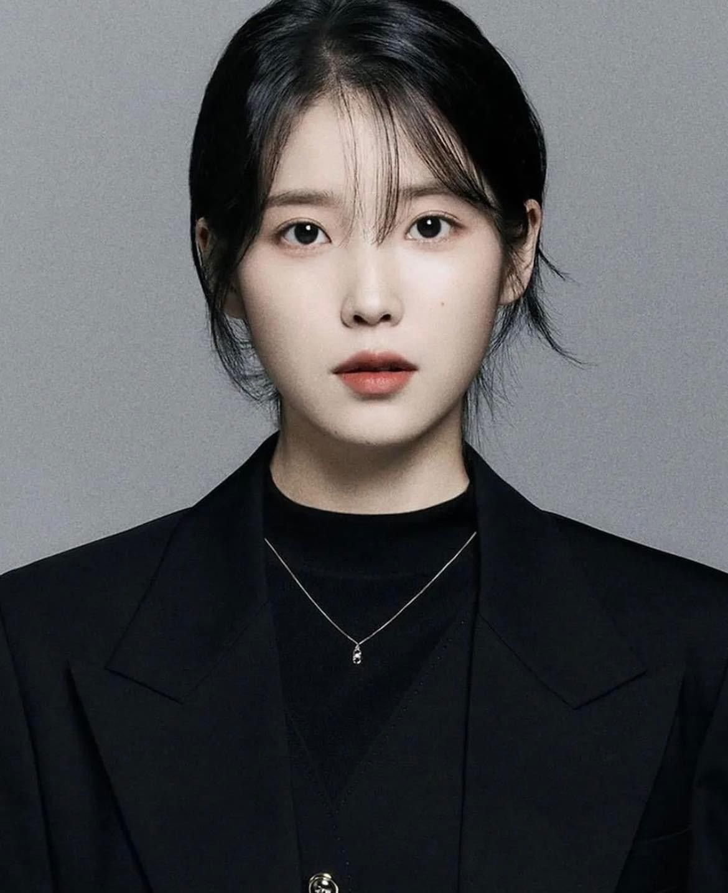

대한민국의 가수이자 배우.만 15세였던 중학교 3학년때 2008년에 가수로 데뷔했으며, 예명인 '아이유'는 '음악으로 너와 내가 하나가 된다'라는 뜻을 가지고 있다. 매력적인 음색과 뛰어난 작사ㆍ작곡 능력을 바탕으로 아이돌이자 아티스트로서 십수 년째 사랑 받고 있을 뿐 아니라, 2012년 이래로 매년 국내 및 아시아의 주요 도시에서 대규모 콘서트를 진행하며 공연자로서도 활발히 활동 중이다.
가수 활동 외에도 각종 예능 프로그램에 출연했으며, 다수의 광고 모델로도 활약 중이다. 2011년에 연기자로 데뷔한 후에는 다양한 드라마와 영화에서 연기 활동도 활발하게 펼치고 있다. 연예계에서는 그야말로 올라운더로 인정 받는 만능 엔터테이너이며, 이 때문에 남녀불문 많은 아이돌들의 롤모델로 꾸준히 꼽히고 있다.